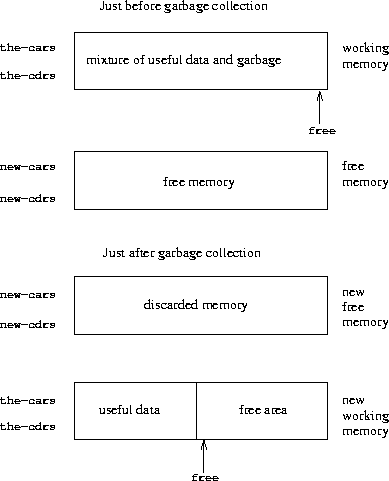

|
In section 5.4, we will show how to implement a Scheme evaluator as a register machine. In order to simplify the discussion, we will assume that our register machines can be equipped with a list-structured memory, in which the basic operations for manipulating list-structured data are primitive. Postulating the existence of such a memory is a useful abstraction when one is focusing on the mechanisms of control in a Scheme interpreter, but this does not reflect a realistic view of the actual primitive data operations of contemporary computers. To obtain a more complete picture of how a Lisp system operates, we must investigate how list structure can be represented in a way that is compatible with conventional computer memories.
There are two considerations in implementing list structure. The first is purely an issue of representation: how to represent the ``box-and-pointer'' structure of Lisp pairs, using only the storage and addressing capabilities of typical computer memories. The second issue concerns the management of memory as a computation proceeds. The operation of a Lisp system depends crucially on the ability to continually create new data objects. These include objects that are explicitly created by the Lisp procedures being interpreted as well as structures created by the interpreter itself, such as environments and argument lists. Although the constant creation of new data objects would pose no problem on a computer with an infinite amount of rapidly addressable memory, computer memories are available only in finite sizes (more's the pity). Lisp systems thus provide an automatic storage allocation facility to support the illusion of an infinite memory. When a data object is no longer needed, the memory allocated to it is automatically recycled and used to construct new data objects. There are various techniques for providing such automatic storage allocation. The method we shall discuss in this section is called garbage collection.
A conventional computer memory can be thought of as an array of cubbyholes, each of which can contain a piece of information. Each cubbyhole has a unique name, called its address or location. Typical memory systems provide two primitive operations: one that fetches the data stored in a specified location and one that assigns new data to a specified location. Memory addresses can be incremented to support sequential access to some set of the cubbyholes. More generally, many important data operations require that memory addresses be treated as data, which can be stored in memory locations and manipulated in machine registers. The representation of list structure is one application of such address arithmetic.
To model computer memory, we use a new kind of data structure called a vector. Abstractly, a vector is a compound data object whose individual elements can be accessed by means of an integer index in an amount of time that is independent of the index.5 In order to describe memory operations, we use two primitive Scheme procedures for manipulating vectors:
For example, if v is a vector, then (vector-ref v 5) gets the fifth entry in the vector v and (vector-set! v 5 7) changes the value of the fifth entry of the vector v to 7.6 For computer memory, this access can be implemented through the use of address arithmetic to combine a base address that specifies the beginning location of a vector in memory with an index that specifies the offset of a particular element of the vector.
We can use vectors to implement the basic pair structures required for a list-structured memory. Let us imagine that computer memory is divided into two vectors: the-cars and the-cdrs. We will represent list structure as follows: A pointer to a pair is an index into the two vectors. The car of the pair is the entry in the-cars with the designated index, and the cdr of the pair is the entry in the-cdrs with the designated index. We also need a representation for objects other than pairs (such as numbers and symbols) and a way to distinguish one kind of data from another. There are many methods of accomplishing this, but they all reduce to using typed pointers, that is, to extending the notion of ``pointer'' to include information on data type.7 The data type enables the system to distinguish a pointer to a pair (which consists of the ``pair'' data type and an index into the memory vectors) from pointers to other kinds of data (which consist of some other data type and whatever is being used to represent data of that type). Two data objects are considered to be the same (eq?) if their pointers are identical.8 Figure 5.14 illustrates the use of this method to represent the list ((1 2) 3 4), whose box-and-pointer diagram is also shown. We use letter prefixes to denote the data-type information. Thus, a pointer to the pair with index 5 is denoted p5, the empty list is denoted by the pointer e0, and a pointer to the number 4 is denoted n4. In the box-and-pointer diagram, we have indicated at the lower left of each pair the vector index that specifies where the car and cdr of the pair are stored. The blank locations in the-cars and the-cdrs may contain parts of other list structures (not of interest here).
|
|
A pointer to a number, such as n4, might consist of a type indicating numeric data together with the actual representation of the number 4.9 To deal with numbers that are too large to be represented in the fixed amount of space allocated for a single pointer, we could use a distinct bignum data type, for which the pointer designates a list in which the parts of the number are stored.10
A symbol might be represented as a typed pointer that designates a sequence of the characters that form the symbol's printed representation. This sequence is constructed by the Lisp reader when the character string is initially encountered in input. Since we want two instances of a symbol to be recognized as the ``same'' symbol by eq? and we want eq? to be a simple test for equality of pointers, we must ensure that if the reader sees the same character string twice, it will use the same pointer (to the same sequence of characters) to represent both occurrences. To accomplish this, the reader maintains a table, traditionally called the obarray, of all the symbols it has ever encountered. When the reader encounters a character string and is about to construct a symbol, it checks the obarray to see if it has ever before seen the same character string. If it has not, it uses the characters to construct a new symbol (a typed pointer to a new character sequence) and enters this pointer in the obarray. If the reader has seen the string before, it returns the symbol pointer stored in the obarray. This process of replacing character strings by unique pointers is called interning symbols.
Given the above representation scheme, we can replace each ``primitive'' list operation of a register machine with one or more primitive vector operations. We will use two registers, the-cars and the-cdrs, to identify the memory vectors, and will assume that vector-ref and vector-set! are available as primitive operations. We also assume that numeric operations on pointers (such as incrementing a pointer, using a pair pointer to index a vector, or adding two numbers) use only the index portion of the typed pointer.
For example, we can make a register machine support the instructions
(assign <reg1> (op car) (reg <reg2>))
(assign <reg1> (op cdr) (reg <reg2>))
if we implement these, respectively, as
(assign <reg1> (op vector-ref) (reg the-cars) (reg <reg2>))
(assign <reg1> (op vector-ref) (reg the-cdrs) (reg <reg2>))
The instructions
(perform (op set-car!) (reg <reg1>) (reg <reg2>))
(perform (op set-cdr!) (reg <reg1>) (reg <reg2>))
are implemented as
(perform
(op vector-set!) (reg the-cars) (reg <reg1>) (reg <reg2>))
(perform
(op vector-set!) (reg the-cdrs) (reg <reg1>) (reg <reg2>))
Cons is performed by allocating an unused index and storing the arguments to cons in the-cars and the-cdrs at that indexed vector position. We presume that there is a special register, free, that always holds a pair pointer containing the next available index, and that we can increment the index part of that pointer to find the next free location.11 For example, the instruction
(assign <reg1> (op cons) (reg <reg2>) (reg <reg3>))
is implemented as the following sequence of vector operations:12
(perform
(op vector-set!) (reg the-cars) (reg free) (reg <reg2>))
(perform
(op vector-set!) (reg the-cdrs) (reg free) (reg <reg3>))
(assign <reg1> (reg free))
(assign free (op +) (reg free) (const 1))
The eq? operation
(op eq?) (reg <reg1>) (reg <reg2>)
simply tests the equality of all fields in the registers, and predicates such as pair?, null?, symbol?, and number? need only check the type field.
Although our register machines use stacks, we need do nothing special here, since stacks can be modeled in terms of lists. The stack can be a list of the saved values, pointed to by a special register the-stack. Thus, (save <reg>) can be implemented as
(assign the-stack (op cons) (reg <reg>) (reg the-stack))
Similarly, (restore <reg>) can be implemented as
(assign <reg> (op car) (reg the-stack))
(assign the-stack (op cdr) (reg the-stack))
and (perform (op initialize-stack)) can be implemented as
(assign the-stack (const ()))
These operations can be further expanded in terms of the vector operations given above. In conventional computer architectures, however, it is usually advantageous to allocate the stack as a separate vector. Then pushing and popping the stack can be accomplished by incrementing or decrementing an index into that vector.
Exercise 5.20. Draw the box-and-pointer representation and the memory-vector representation (as in figure 5.14) of the list structure produced by
(define x (cons 1 2))
(define y (list x x))
with the free pointer initially p1. What is the final value of free ? What pointers represent the values of x and y ?
Exercise 5.21. Implement register machines for the following procedures. Assume that the list-structure memory operations are available as machine primitives.
a. Recursive count-leaves:
(define (count-leaves tree)
(cond ((null? tree) 0)
((not (pair? tree)) 1)
(else (+ (count-leaves (car tree))
(count-leaves (cdr tree))))))
b. Recursive count-leaves with explicit counter:
(define (count-leaves tree)
(define (count-iter tree n)
(cond ((null? tree) n)
((not (pair? tree)) (+ n 1))
(else (count-iter (cdr tree)
(count-iter (car tree) n)))))
(count-iter tree 0))
Exercise 5.22. Exercise 3.12 of section 3.3.1 presented an append procedure that appends two lists to form a new list and an append! procedure that splices two lists together. Design a register machine to implement each of these procedures. Assume that the list-structure memory operations are available as primitive operations.
The representation method outlined in section 5.3.1 solves the problem of implementing list structure, provided that we have an infinite amount of memory. With a real computer we will eventually run out of free space in which to construct new pairs.13 However, most of the pairs generated in a typical computation are used only to hold intermediate results. After these results are accessed, the pairs are no longer needed -- they are garbage. For instance, the computation
(accumulate + 0 (filter odd? (enumerate-interval 0 n)))
constructs two lists: the enumeration and the result of filtering the enumeration. When the accumulation is complete, these lists are no longer needed, and the allocated memory can be reclaimed. If we can arrange to collect all the garbage periodically, and if this turns out to recycle memory at about the same rate at which we construct new pairs, we will have preserved the illusion that there is an infinite amount of memory.
In order to recycle pairs, we must have a way to determine which allocated pairs are not needed (in the sense that their contents can no longer influence the future of the computation). The method we shall examine for accomplishing this is known as garbage collection. Garbage collection is based on the observation that, at any moment in a Lisp interpretation, the only objects that can affect the future of the computation are those that can be reached by some succession of car and cdr operations starting from the pointers that are currently in the machine registers.14 Any memory cell that is not so accessible may be recycled.
There are many ways to perform garbage collection. The method we shall examine here is called stop-and-copy. The basic idea is to divide memory into two halves: ``working memory'' and ``free memory.'' When cons constructs pairs, it allocates these in working memory. When working memory is full, we perform garbage collection by locating all the useful pairs in working memory and copying these into consecutive locations in free memory. (The useful pairs are located by tracing all the car and cdr pointers, starting with the machine registers.) Since we do not copy the garbage, there will presumably be additional free memory that we can use to allocate new pairs. In addition, nothing in the working memory is needed, since all the useful pairs in it have been copied. Thus, if we interchange the roles of working memory and free memory, we can continue processing; new pairs will be allocated in the new working memory (which was the old free memory). When this is full, we can copy the useful pairs into the new free memory (which was the old working memory).15
We now use our register-machine language to describe the stop-and-copy algorithm in more detail. We will assume that there is a register called root that contains a pointer to a structure that eventually points at all accessible data. This can be arranged by storing the contents of all the machine registers in a pre-allocated list pointed at by root just before starting garbage collection.16 We also assume that, in addition to the current working memory, there is free memory available into which we can copy the useful data. The current working memory consists of vectors whose base addresses are in registers called the-cars and the-cdrs, and the free memory is in registers called new-cars and new-cdrs.
Garbage collection is triggered when we exhaust the free cells in the current working memory, that is, when a cons operation attempts to increment the free pointer beyond the end of the memory vector. When the garbage-collection process is complete, the root pointer will point into the new memory, all objects accessible from the root will have been moved to the new memory, and the free pointer will indicate the next place in the new memory where a new pair can be allocated. In addition, the roles of working memory and new memory will have been interchanged -- new pairs will be constructed in the new memory, beginning at the place indicated by free, and the (previous) working memory will be available as the new memory for the next garbage collection. Figure 5.15 shows the arrangement of memory just before and just after garbage collection.
|  |
The state of the garbage-collection process is controlled by maintaining two pointers: free and scan. These are initialized to point to the beginning of the new memory. The algorithm begins by relocating the pair pointed at by root to the beginning of the new memory. The pair is copied, the root pointer is adjusted to point to the new location, and the free pointer is incremented. In addition, the old location of the pair is marked to show that its contents have been moved. This marking is done as follows: In the car position, we place a special tag that signals that this is an already-moved object. (Such an object is traditionally called a broken heart.)17 In the cdr position we place a forwarding address that points at the location to which the object has been moved.
After relocating the root, the garbage collector enters its basic cycle. At each step in the algorithm, the scan pointer (initially pointing at the relocated root) points at a pair that has been moved to the new memory but whose car and cdr pointers still refer to objects in the old memory. These objects are each relocated, and the scan pointer is incremented. To relocate an object (for example, the object indicated by the car pointer of the pair we are scanning) we check to see if the object has already been moved (as indicated by the presence of a broken-heart tag in the car position of the object). If the object has not already been moved, we copy it to the place indicated by free, update free, set up a broken heart at the object's old location, and update the pointer to the object (in this example, the car pointer of the pair we are scanning) to point to the new location. If the object has already been moved, its forwarding address (found in the cdr position of the broken heart) is substituted for the pointer in the pair being scanned. Eventually, all accessible objects will have been moved and scanned, at which point the scan pointer will overtake the free pointer and the process will terminate.
We can specify the stop-and-copy algorithm as a sequence of instructions for a register machine. The basic step of relocating an object is accomplished by a subroutine called relocate-old-result-in-new. This subroutine gets its argument, a pointer to the object to be relocated, from a register named old. It relocates the designated object (incrementing free in the process), puts a pointer to the relocated object into a register called new, and returns by branching to the entry point stored in the register relocate-continue. To begin garbage collection, we invoke this subroutine to relocate the root pointer, after initializing free and scan. When the relocation of root has been accomplished, we install the new pointer as the new root and enter the main loop of the garbage collector.
begin-garbage-collection
(assign free (const 0))
(assign scan (const 0))
(assign old (reg root))
(assign relocate-continue (label reassign-root))
(goto (label relocate-old-result-in-new))
reassign-root
(assign root (reg new))
(goto (label gc-loop))
In the main loop of the garbage collector we must determine whether there are any more objects to be scanned. We do this by testing whether the scan pointer is coincident with the free pointer. If the pointers are equal, then all accessible objects have been relocated, and we branch to gc-flip, which cleans things up so that we can continue the interrupted computation. If there are still pairs to be scanned, we call the relocate subroutine to relocate the car of the next pair (by placing the car pointer in old). The relocate-continue register is set up so that the subroutine will return to update the car pointer.
gc-loop
(test (op =) (reg scan) (reg free))
(branch (label gc-flip))
(assign old (op vector-ref) (reg new-cars) (reg scan))
(assign relocate-continue (label update-car))
(goto (label relocate-old-result-in-new))
At update-car, we modify the car pointer of the pair being scanned, then proceed to relocate the cdr of the pair. We return to update-cdr when that relocation has been accomplished. After relocating and updating the cdr, we are finished scanning that pair, so we continue with the main loop.
update-car
(perform
(op vector-set!) (reg new-cars) (reg scan) (reg new))
(assign old (op vector-ref) (reg new-cdrs) (reg scan))
(assign relocate-continue (label update-cdr))
(goto (label relocate-old-result-in-new))
update-cdr
(perform
(op vector-set!) (reg new-cdrs) (reg scan) (reg new))
(assign scan (op +) (reg scan) (const 1))
(goto (label gc-loop))
The subroutine relocate-old-result-in-new relocates objects as follows: If the object to be relocated (pointed at by old) is not a pair, then we return the same pointer to the object unchanged (in new). (For example, we may be scanning a pair whose car is the number 4. If we represent the car by n4, as described in section 5.3.1, then we want the ``relocated'' car pointer to still be n4.) Otherwise, we must perform the relocation. If the car position of the pair to be relocated contains a broken-heart tag, then the pair has in fact already been moved, so we retrieve the forwarding address (from the cdr position of the broken heart) and return this in new. If the pointer in old points at a yet-unmoved pair, then we move the pair to the first free cell in new memory (pointed at by free) and set up the broken heart by storing a broken-heart tag and forwarding address at the old location. Relocate-old-result-in-new uses a register oldcr to hold the car or the cdr of the object pointed at by old.18
relocate-old-result-in-new
(test (op pointer-to-pair?) (reg old))
(branch (label pair))
(assign new (reg old))
(goto (reg relocate-continue))
pair
(assign oldcr (op vector-ref) (reg the-cars) (reg old))
(test (op broken-heart?) (reg oldcr))
(branch (label already-moved))
(assign new (reg free)) ; new location for pair
;; Update free pointer.
(assign free (op +) (reg free) (const 1))
;; Copy the car and cdr to new memory.
(perform (op vector-set!)
(reg new-cars) (reg new) (reg oldcr))
(assign oldcr (op vector-ref) (reg the-cdrs) (reg old))
(perform (op vector-set!)
(reg new-cdrs) (reg new) (reg oldcr))
;; Construct the broken heart.
(perform (op vector-set!)
(reg the-cars) (reg old) (const broken-heart))
(perform
(op vector-set!) (reg the-cdrs) (reg old) (reg new))
(goto (reg relocate-continue))
already-moved
(assign new (op vector-ref) (reg the-cdrs) (reg old))
(goto (reg relocate-continue))
At the very end of the garbage-collection process, we interchange the role of old and new memories by interchanging pointers: interchanging the-cars with new-cars, and the-cdrs with new-cdrs. We will then be ready to perform another garbage collection the next time memory runs out.
gc-flip
(assign temp (reg the-cdrs))
(assign the-cdrs (reg new-cdrs))
(assign new-cdrs (reg temp))
(assign temp (reg the-cars))
(assign the-cars (reg new-cars))
(assign new-cars (reg temp))
5 We could represent memory as lists of items. However, the access time would then not be independent of the index, since accessing the nth element of a list requires n - 1 cdr operations.
6 For completeness, we should specify a make-vector operation that constructs vectors. However, in the present application we will use vectors only to model fixed divisions of the computer memory.
7 This is precisely the same ``tagged data'' idea we introduced in chapter 2 for dealing with generic operations. Here, however, the data types are included at the primitive machine level rather than constructed through the use of lists.
8 Type information may be encoded in a variety of ways, depending on the details of the machine on which the Lisp system is to be implemented. The execution efficiency of Lisp programs will be strongly dependent on how cleverly this choice is made, but it is difficult to formulate general design rules for good choices. The most straightforward way to implement typed pointers is to allocate a fixed set of bits in each pointer to be a type field that encodes the data type. Important questions to be addressed in designing such a representation include the following: How many type bits are required? How large must the vector indices be? How efficiently can the primitive machine instructions be used to manipulate the type fields of pointers? Machines that include special hardware for the efficient handling of type fields are said to have tagged architectures.
9 This decision on the representation of numbers determines whether eq?, which tests equality of pointers, can be used to test for equality of numbers. If the pointer contains the number itself, then equal numbers will have the same pointer. But if the pointer contains the index of a location where the number is stored, equal numbers will be guaranteed to have equal pointers only if we are careful never to store the same number in more than one location.
10 This is just like writing a number as a sequence of digits, except that each ``digit'' is a number between 0 and the largest number that can be stored in a single pointer.
11 There are other ways of finding free storage. For example, we could link together all the unused pairs into a free list. Our free locations are consecutive (and hence can be accessed by incrementing a pointer) because we are using a compacting garbage collector, as we will see in section 5.3.2.
12 This is essentially the implementation of cons in terms of set-car! and set-cdr!, as described in section 3.3.1. The operation get-new-pair used in that implementation is realized here by the free pointer.
13 This may not be true eventually, because memories may get large enough so that it would be impossible to run out of free memory in the lifetime of the computer. For example, there are about 3× 1013, microseconds in a year, so if we were to cons once per microsecond we would need about 1015 cells of memory to build a machine that could operate for 30 years without running out of memory. That much memory seems absurdly large by today's standards, but it is not physically impossible. On the other hand, processors are getting faster and a future computer may have large numbers of processors operating in parallel on a single memory, so it may be possible to use up memory much faster than we have postulated.
14 We assume here that the stack is represented as a list as described in section 5.3.1, so that items on the stack are accessible via the pointer in the stack register.
15 This idea was invented and first implemented by Minsky, as part of the implementation of Lisp for the PDP-1 at the MIT Research Laboratory of Electronics. It was further developed by Fenichel and Yochelson (1969) for use in the Lisp implementation for the Multics time-sharing system. Later, Baker (1978) developed a ``real-time'' version of the method, which does not require the computation to stop during garbage collection. Baker's idea was extended by Hewitt, Lieberman, and Moon (see Lieberman and Hewitt 1983) to take advantage of the fact that some structure is more volatile and other structure is more permanent.
An alternative commonly used garbage-collection technique is the mark-sweep method. This consists of tracing all the structure accessible from the machine registers and marking each pair we reach. We then scan all of memory, and any location that is unmarked is ``swept up'' as garbage and made available for reuse. A full discussion of the mark-sweep method can be found in Allen 1978.
The Minsky-Fenichel-Yochelson algorithm is the dominant algorithm in use for large-memory systems because it examines only the useful part of memory. This is in contrast to mark-sweep, in which the sweep phase must check all of memory. A second advantage of stop-and-copy is that it is a compacting garbage collector. That is, at the end of the garbage-collection phase the useful data will have been moved to consecutive memory locations, with all garbage pairs compressed out. This can be an extremely important performance consideration in machines with virtual memory, in which accesses to widely separated memory addresses may require extra paging operations.
16 This list of registers does not include the registers used by the storage-allocation system -- root, the-cars, the-cdrs, and the other registers that will be introduced in this section.
17 The term broken heart was coined by David Cressey, who wrote a garbage collector for MDL, a dialect of Lisp developed at MIT during the early 1970s.
18 The garbage collector uses the low-level predicate pointer-to-pair? instead of the list-structure pair? operation because in a real system there might be various things that are treated as pairs for garbage-collection purposes. For example, in a Scheme system that conforms to the IEEE standard a procedure object may be implemented as a special kind of ``pair'' that doesn't satisfy the pair? predicate. For simulation purposes, pointer-to-pair? can be implemented as pair?.